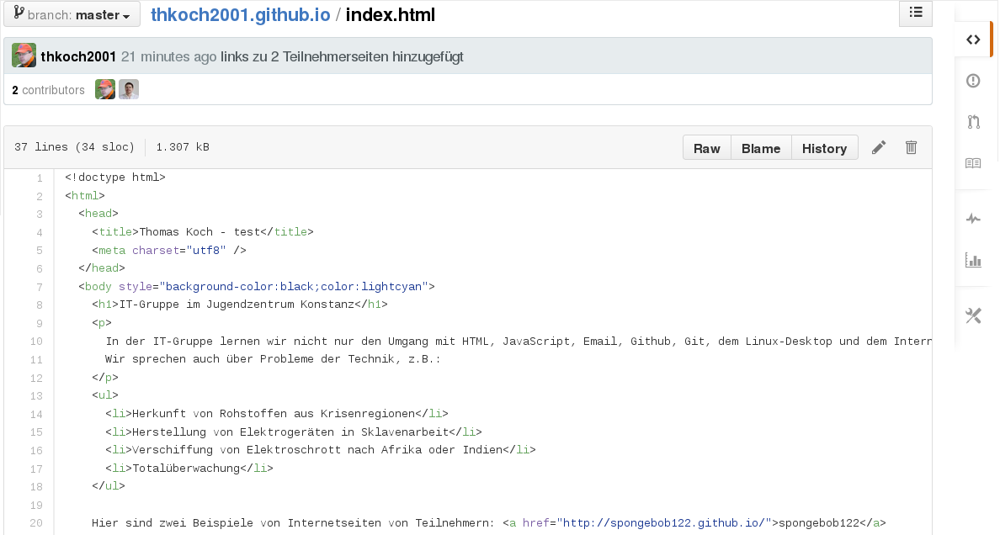

Git wird normalerweise vom Terminal aus benutzt.
-
Das Repository muss anfangs einmal geklont werden:
git clone ADRESSE Die Adresse findet man in dem kleinen Kästchen rechts auf github.
-
Zum arbeiten mit dem Repository muss in das Verzeichnis gewechselt werden, in dem das Repository liegt:
cd REPOSITORYNAME
-
Nun kann man Dateien verändern oder z.B. mit dem Dateimanager ein Bild in den Repository Ordner kopieren.
-
Die Änderungen müssen dem Repository bekannt gemacht werden:
git add -A
-
Die Änderungen bekommen eine Änderungsnachricht:
git commit -m"Dieses und jenes wurde gemacht"
-
Die Änderungen werden auf github gedrückt:
git push
Wenn man zwischendurch auf github Änderungen gemacht hat kann man diese Änderungen wieder in sein lokales Repository ziehen:
git pull
So sieht der Webeditor von github.com aus:
